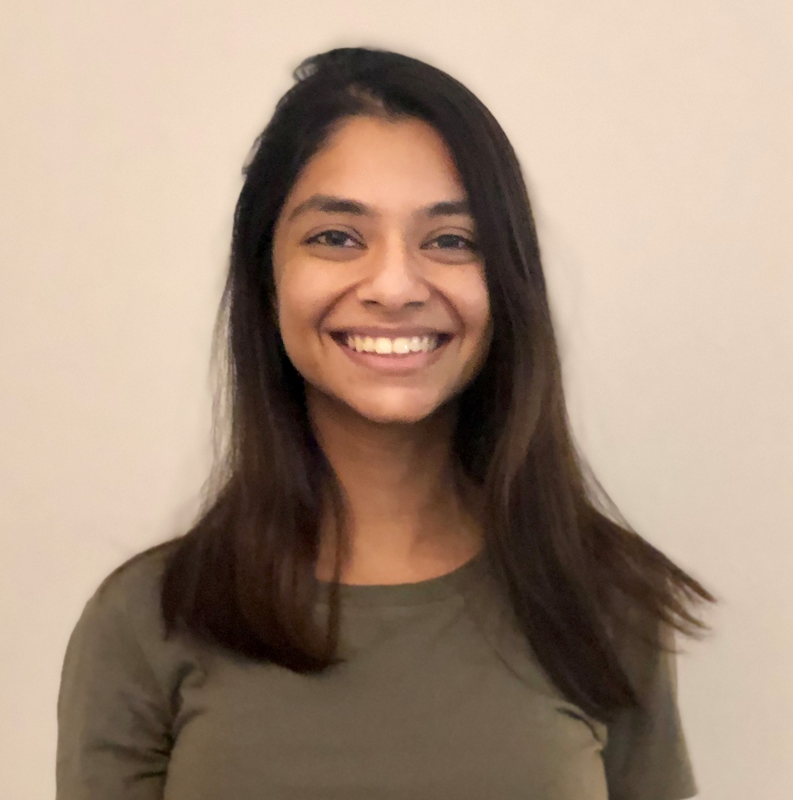
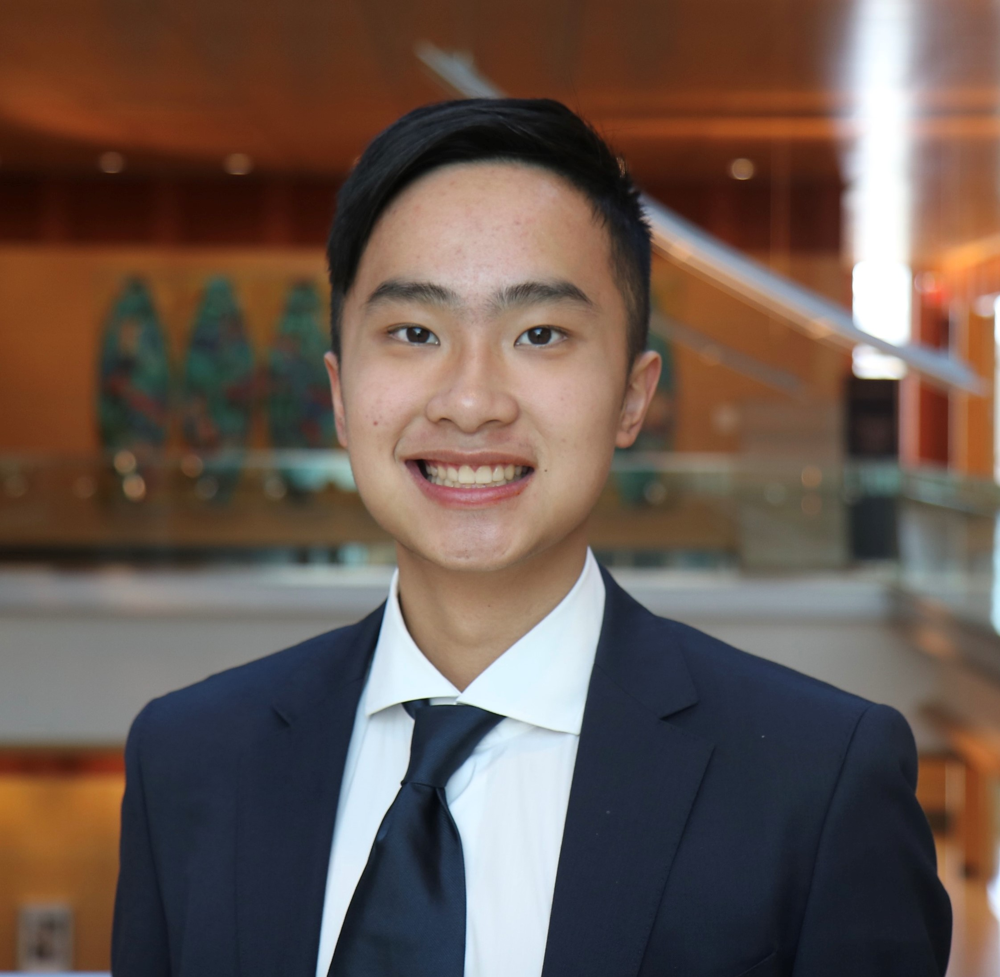
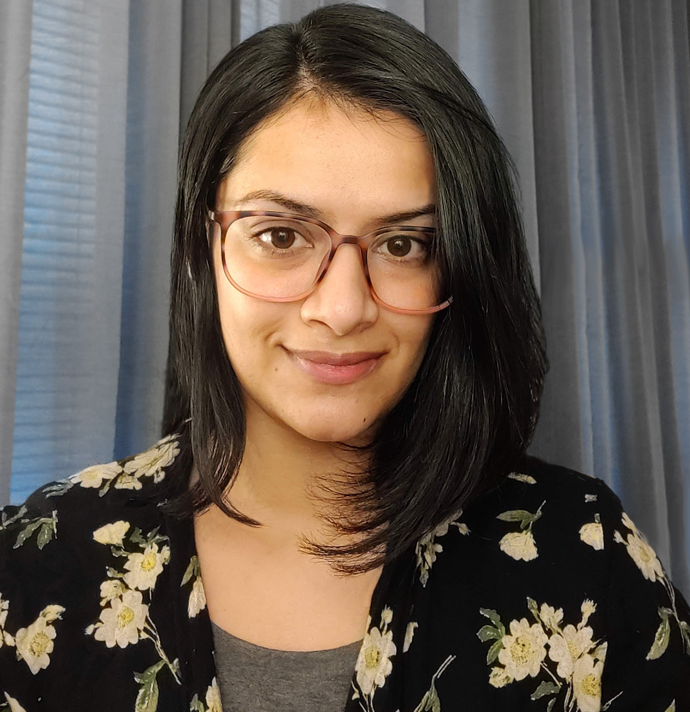

Want to Do Research?
Ph.D.
I will not be admitting students in the upcoming admissions cycle. If interested in applying to the Ph.D. program (to start Fall 2024), check the UMSI website. Applications are typically due by December 1st.
Master's or Undergraduate
I am not currently hiring master's or undergraduate students to work on research
Currently working with:
Ph.D. Students
 Rahaf Alharbi
Pronouns: she/her
Program: Ph.D. in Information
Interests: disability studies, accessibility, privacy, HCI
Rahaf Alharbi
Pronouns: she/her
Program: Ph.D. in Information
Interests: disability studies, accessibility, privacy, HCI
Sam Ankenbauer Pronouns: he/him Interests: HCI, STS, information ecologies, accessibility
John Rudnik Interests: political (and moral) economy of longevity & technology, old age and inequality, STS
Master's and Undergraduate Students
Sharadhi Raghuraj Program: M.S. Information Interests: HCI, accessibility, ubiquitous computing
Mingyi Li Program: B.S. in Computer Science and Cognitive Science Interests: HCI, accessibility, aging, computational design
Alum
 Anandita Aggarwal Program: M.S in Information Pronouns: she/her Interest: accessibility, HCI, social media/online communities
 Luke Kudryashov
Program: M.S in Information
Interests: Disability studies, digital accessibility, HCI
Luke Kudryashov
Program: M.S in Information
Interests: Disability studies, digital accessibility, HCI
 Gina Spelman
Pronouns: she/her/hers
Program: M.S. in Information
Interests: HCI, UX design + research, visual communication, information architecture, interaction design
Gina Spelman
Pronouns: she/her/hers
Program: M.S. in Information
Interests: HCI, UX design + research, visual communication, information architecture, interaction design
Lauren Trimble Pronouns: she/her/hers Program: M.S in Information Interests: equitable information systems, accessible voting
 Kerry Lee Pronouns: he/him Program: B.S. in Economics, Pre-Med Interests: life sciences, technology
 Maisarah Mahathir
Program: B.A. in Psychology, B.S. in Information
Interests: HCI, social Media, organizational behavior
Maisarah Mahathir
Program: B.A. in Psychology, B.S. in Information
Interests: HCI, social Media, organizational behavior
 Pooja Upadhyay Pronouns: she/her Interests: HCI, search, information systems
Yeshashree Prasanna Pronouns: she/her Program: M.S. Information Interests: HCI, voice assistant design, privacy